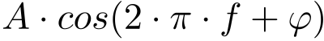

Voici la représentation d'une fonction sinusoidale, vous pouvez changer son amplitude, sa frequence et sa phase en utilisant les curseurs ci dessus.
L'expression de la fonction représentée est :

Où A est l'amplitude, f la fréquence en Hz et φ la phase en rad.